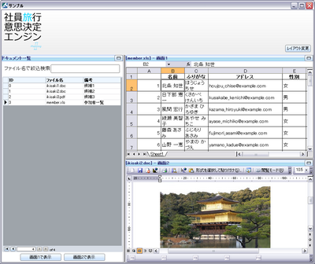
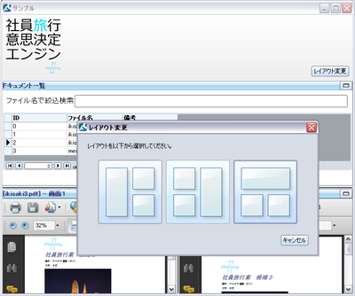
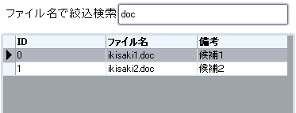
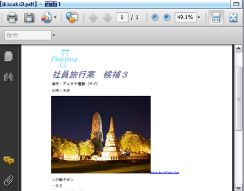
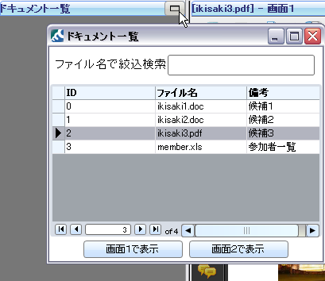
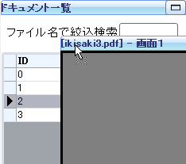
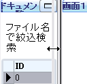

株式会社 アイプランニング
Towa Edogawabashi building 8F
Yamabuki-cho 347
Shinjuku-ku Tokyo
Phone: 03-5225-1147
RIA環境「Curl」ならではの機能の利用例として、ActiveXの利用、高速なインクリメンタル検索、スクリーンショット防止等の作成方法を公開します。
Curlの特徴については、前回の記事をご覧ください。
Curl特集(1)「CurlとRubyOnRails連携調査 エンタープライズ向けRIA」
Curlで作る作成アプリケーションについて
下図は、ActiveXを使ったドキュメントビューアの試作です。
弊社でもちょうど社員旅行のシーズンなので、
「社員旅行向けのドキュメントを比較検討する」という設定で作成しました。
このアプリケーションには、以下のような特徴があります。
・ActiveXにより、PDF, Word, Excelファイルなどを開くことが出来る。
・高速なインクリメンタル検索
・柔軟なレイアウト変更
これらは、RIAの中でもCurlならではといえる機能です。

▲ PDF, Word, Excelファイルなどをウィンドウ内で開くことが出来ます。

▲ レイアウトを変更することが出来ます。ウィンドウ配置はドラッグで入れ替えます。
開発で作ったコンポーネントなど
Curlはオブジェクト指向言語なので、
既存のコンポーネントを継承し拡張すれば
オリジナルの機能を付け加えることが出来ます。
以下に、コードの一部を公開します。
インクリメンタル検索

RecordGridにはフィルタという機能が備わっています。
通常はソートや特定のキーで絞込みを行いますが、
ここでは正規表現でリアルタイムに絞込む機能を実装します。
||絞込み対象RecordGrid
{let grid:RecordGrid =
{RecordGrid
...
||ここにデータを定義
}
{TextField
height = 0.8cm,
{on ValueChanged at t:TextField do
set grid.filter =
{RecordFilter
{proc {x:Record}:bool
||filenameカラムを元に絞込み
{return {regexp-match? t.value, {String x["filename"]} }}
}
}
}
}
ActiveXオブジェクト
ActiveXでブラウザ画面を表示し、
Urlでローカルファイルを指定することで、
ブラウザで開けるファイルならなんでも表示できるビューアを作ることが出来ます。
注意点としては、Officeファイルを開こうとしたときなどは
セキュリティ警告が発生することがあること、
ウィンドウの制御がCurlと別で行われるので
ActiveXの上から描画を行うことは出来なくなります。
{let ieObject1:ActiveXObject =
{ActiveXObject
ProgId = "Shell.Explorer"
}
}
{ActiveXGraphic
width={make-elastic preferred-size=1m},
height={make-elastic preferred-size=1m},
ieObject1
}
多機能ウィンドウ
 
（ドラッグ＆ドロップによる配置の入れ替え、別ウィンドウ表示）
タイトルバーを付けたコンテナです。
DropFrameの子にItemFrameを設定して使います。
タイトルバーをドラッグ＆ドロップすることで、
他のItemFrameと位置を交換することが出来ます。
||ドラッグ・ウィンドウ化対応フレーム（子）
||ドラッグ・ウィンドウ化対応フレーム（親）に内包させてください。
{define-class public ItemFrame{inherits VBox}
{field private _label:Visual = {text-part}}
{field private _title:String = {String}}
{field private _contents:Visual}
{field private _contents-container:Frame = {Frame}}
{field private _view:View = {View}}
{constructor public {default title:String="", contents:Visual, ...}
{construct-super.VBox
width={make-elastic preferred-size=8cm},
height={make-elastic preferred-size=8cm},
dragee={ImageDragee},
{SkinnableFrame
||タイトルバーのスキン
skin = {ShadedSkinSpec
margin-spec = {OffsetSpec 0pt},
"#91BFF2",
"#BBE9F0",
highlight-alpha-1 = 1,
highlight-alpha-2 = 0.4,
border-color = "#6C9AF0",
corner-radius = 3px,
upper-left-rounded? = true,
upper-right-rounded? = true,
lower-right-rounded? = false,
lower-left-rounded? = false||,
},
border-width = 0pt,
border-style= BorderStyle.none,
margin = 0pt,
valign = "center",
halign = "center",
width={make-elastic preferred-size=8cm},
height=0.5cm,
font-size = 9pt,
font-weight = "bold",
||タイトルバー
{HBox
self._label,
{Fill},
||ウィンドウ化ボタン
{CommandButton
label = {image source={url "image/fullico.png"}},
{on Action at b:CommandButton do
||独立ウィンドウの生成
set self._view =
{View
title = self._title,
height = 15cm,
width = 15cm,
contents,
||独立ウィンドウが閉じられたら、
||Frameを元の場所に戻す
{on WindowClose do
{self._contents-container.add
replace? = true,
contents
}
{set b.enabled? = true}
}
}
{self._view.center-view}
{self._view.show}
{self._contents-container.add
replace? = true,
{Frame
width = {make-elastic},
height = {make-elastic},
background = "#777777"
}
}
{set b.enabled? = false}
}
}
},
color = "#333377"
},
self._contents-container,
{splice ...}
}
set self._contents = contents
{self._contents-container.add contents}
{self._label.clear}
{self._label.add title}
{set self._title = title}
}
||タイトルラベル文字列を変更
{method public {set-title text:String}:void
{self._label.clear}
{self._label.add text}
{set self._title = text}
{if (not self._view.destroyed?) then
{set self._view.title = text}
}
}
}
||ドラッグ・ウィンドウ化対応フレーム（親）
{define-class public DropFrame{inherits Frame}
{constructor public {default...}
{construct-super.Frame
width={make-elastic preferred-size=8cm},
height={make-elastic preferred-size=8cm},
border-width = 1pt,
border-style= BorderStyle.raised,
{splice ...},
{on e:DragOver at f:Frame do
{e.will-accept-drop?
{proc {type:Type, x:Distance, y:Distance,
effect:#DragEffect}:DragEffect
{if {type.subtype-of? ItemFrame} then
{return drag-effect-move}
else
{return drag-effect-none}
}
}
}
},
{on e:Drop at f:Frame do
{e.accept-drop
{proc {a:any, x:Distance, y:Distance,
effect:#DragEffect}:DropResult
{return
{DropResultCopy
action =
{proc {}:void
let v:#Visual = (a asa #Visual)
let parent:#Visual = v.visual-parent
{for x in f.graphical-children do
{parent.add
x,
replace? = true
}
}
{f.add
a,
replace? = true
}
}
}
}
}
}
}
}
}
}
Tips
開発中に知ったテクニックなどを以下に掲載します。
幅可変レイアウト
PanedWindowを使えば可変レイアウトが実現できます。
||可変２行ボックス
{define-proc {vpaned-window ...}:PanedWindow
def pw1 =
{PanedWindow
orientation = Orientation.vertical,
width={make-elastic preferred-size=10cm},
height={make-elastic preferred-size=10cm},
{splice ...}
}
{for v in ... do
{pw1.add-pane v}
}
{return pw1}
}
簡易コピー＆ペースト制限（スクリーンキャプチャ防止）
情報漏えい対策に、クリップボードを無効化したい場合は、
以下のコードが使えます。
{define-proc public {brockClip}:()
{let clip:Clipboard =
{Clipboard.get-system-clipboard}
}
{clip.set-string "コピー・ペーストは禁止しています。"}
}
{View
||ここに隠蔽したい情報を入れる
...
{on ViewDeactivateEvent do
{brockClip}
}
}
これで、Curlウィンドウが非アクティブになったタイミングでクリップボードを上書きします。
スクリーンキャプチャの防止を行いたい場合は、以上の対応に加え、
非アクティブ時にCurlの画面を隠蔽するなどの対応を取らなければならないでしょう。
また、現時点ではActiveXGraphicに対してこの方策は取れないようです。
まとめ
Curlの利点は、このような高機能なUIが、シンプルで小さいコードで実現できるところにあります。
習得は大変でしたが、コードの見通しがよいため、機能追加・修正は素早く行えますし、
慣れればプロトタイプ作成にこぎつけるまではかなり早く行えるようになるでしょう。
アイプランニング技術情報
技術情報TOPページ
プログラマ募集中・・・
お客さまの立場に立ってモノが作れる判断力、企画力、コンサルティング能力を磨きたくはありませんか？プログラム能力は、プロジェクトを通じて自然と能力があがるようなシステムになっています。初心者プログラマであっても３年程度で、その能力は初心者だったとは思えないくらいのスキルとなっています。
これは、「最初は誰でも初心者だ」という教育方針があるため、また、多くの社員が入社して初めてプログラミングにふれたという経験があるために自分のつまづき体験や、成功体験を含めた教育がなされているからなのです。
このようにアイプランニングでは、社員１人ひとりの個性と人間性を重視し、スキルにあったマンツーマン教育であなたを一人前のエンジニアへと成長させていきます。 それは誠実なスタッフが集まっているからこそ、どんなお客様からも信頼される企業に成長できるから。私たちはそう考えています。
プログラマを目指して会社に入ったものの、思った通りの仕事をさせてもらえなかったと思っている人、教育システムが十分でなかったためにスキルが身に付いていないと思っている人も気軽にご応募ください。パソコンのスキルに自信のない方でも、マンツーマンの研修制度で一人前に成長できるフィールドを整えておりますので安心してご応募くださいね。
知識だけでなく本当の開発力が身につく環境でのシステム開発でみつかる『やりがい』はもちろん、プライベートでも今までになかった充実感が得られますよ。